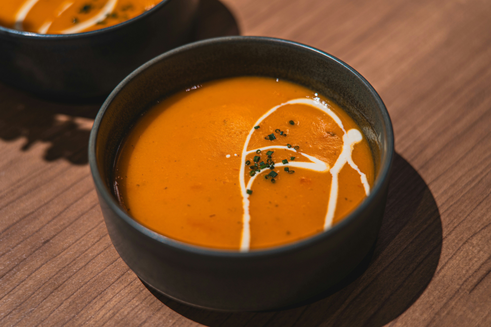

Creamy Tomato Soup

Description
This recipe will teach you how to make a creamy tomato soup.
Tomato soup is a soup with tomatoes as the primary ingredient. It can be served hot or cold, and may be made in a variety of ways.
Ingredients
- Tomatoes: Start with four peeled, seeded, and diced tomatoes.
- Tomato juice: Cook the diced tomatoes in four cups of tomato juice.
- Basil: You'll need 14 leaves of fresh basil.
- Cream: Heavy whipping cream creates a rich and creamy texture.
- Butter: A stick of butter adds to the richness and lends flavor.
- Seasonings: The tomato basil soup is simply seasoned with salt and pepper.
Steps
- Step 1: Gather all your ingredients.
- Step 2: Place tomatoes and juice in a stockpot over medium heat; bring to a simmer. Cook until tomatoes have softened, about 30 minutes.
- Step 3: Remove the pot from heat. Add basil leaves to the pot.
- Step 4: Use an immersion blender to purée soup until smooth.
- Step 5: Stir in heavy cream and butter. Cook and stir over medium heat until butter is melted, about 5 minutes. Do not boil. Season with salt and pepper.
Enjoy!
Recipe source: Rich and Creamy Tomato Basil Soup by MARBALET
Tomato soup description source: Tomato soup article on Wikipedia
Home